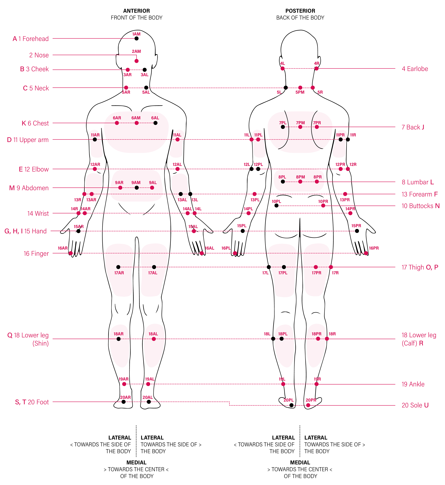

Skin temperature#
Why: the mechanistic reasons behind the measurement#
Skin temperature (Tsk) represents the body’s thermal interface with the environment. It reflects the dynamic balance between internal heat delivery via skin blood flow and external heat exchange through convection, radiation, and evaporation [Havenith, 2001, Arens and Zhang, 2006]. Changes in skin temperature, therefore, serve as a direct indicator of cutaneous vasomotor adjustments that regulate core-to-environment heat transfer [Havenith, 2001, Arens and Zhang, 2006, Romanovsky, 2014].
Unlike CBT, which changes slowly, skin temperature responds within seconds to alterations in air temperature, mean radiant temperature, air velocity, or clothing insulation. The spatial pattern of skin temperature provides insight into regional heat-loss pathways and thermoregulatory strategy: for example, distal (hand, foot) skin cooling denotes vasoconstriction, whereas proximal and facial warming mark vasodilation [Taylor, 2014].
At the whole-body level, mean skin temperature is a determinant of thermal comfort perception and autonomic heat-loss drive, forming part of the neural input that defines thermal sensation thresholds [Jacquot et al., 2014, Nadel et al., 1973, Zhang et al., 2004, Zhang et al., 2010].
How: sensor types for measurement#
Contact sensors (thermistors, thermocouples). Small, taped sensors measure surface temperature conductively. When properly mounted and shielded, both precision NTC thermistors and fine-wire copper–constantan thermocouples offer high accuracy and sub-second response; setup choices (contact pressure, tape, shielding, cable movement) are the dominant error sources rather than sensor physics [MacRae et al., 2018, Psikuta et al., 2014]. Furthermore, hard-wired connections can hinder participant movement and are prone to detachment during movement, limiting their use in field settings [James et al., 2014]
Wearable loggers (e.g., iButton®). Compact thermochrones enable long-term field recordings (typically 1–60 s sampling). After two-point calibration, accuracy ~±0.1 °C is achievable. However, due to their larger mass and stainless-steel packaging, they exhibit high thermal inertia, resulting in slower response times, with a time constant of approximately 19 seconds in water. Consequently, fast temperature transients are effectively low-pass filtered, which can introduce momentary errors of up to 1 °C during rapid environmental changes [Hasselberg et al., 2013, Smith et al., 2010, Vanmarkenlichtenbelt et al., 2006].
Textile-integrated sensors. An emerging class of skin-temperature sensors embeds thermally sensitive elements into garment fabrics or flexible printed substrates, enabling multi-site monitoring with minimal wiring burden [Trung and Lee, 2016]. Contact quality depends on garment fit and fabric tension, typically introducing site-level inaccuracies of 0.3–1.0 °C relative to co-located thermistors; individual factory calibration is rarely provided. These sensors are best treated as qualitative or trend-level instruments unless validated against a reference thermistor under the specific protocol conditions.
Infrared thermometry. Handheld infrared thermometers provide non-contact “point and shoot” spot measurements of thermal radiation emitted from the skin [Bach et al., 2015]. These low-cost devices are highly valid and reliable for measuring skin temperature under stable, resting thermoneutral conditions [Buono et al., 2007]. However, their accuracy significantly degrades in the presence of physical or environmental stressors. Specifically, sweat accumulation on the skin alters its radiant properties, leading infrared thermometers to substantially underestimate true skin temperature during exercise or in hot environments [James et al., 2014, Bach et al., 2015].
Infrared thermography (IRT). IRT provides non-contact regional/whole-body mapping. With emissivity set near human skin values (~0.98), reflected temperature accounted for, and viewing distance/angle controlled, modern systems achieve ≲0.1–0.2 °C thermal resolution under static, controlled scenes [Almeida et al., 2022, Lahiri et al., 2012]. Similar to infrared thermometers, moisture, sweat, or topical lotions act as physical barriers that lower apparent emissivity and can introduce massive temperature errors [Bernard et al., 2013].
Where: body sites of measurement#
Skin temperature exhibits large regional variation; typically smaller under thermoneutral and warm conditions, and potentially exceeding 10 °C across the body under cold exposure [Arens and Zhang, 2006, Hardy et al., 1938, Nadel et al., 1971]. These differences arise from the heterogeneous distribution of skin blood flow, subcutaneous fat, and local exposure to environmental heat exchange. The choice of where to measure Tsk depends fundamentally on whether the aim is to obtain a representative whole-body mean or to probe regional mechanisms of thermoregulation.
{kind=link}

Fig. 1 Body sites for skin temperature measurement used across protocols.
Anterior and posterior views show 18 anatomical regions grouped by head, torso, arms, and legs. Labels adopt a consistent left/right (L/R), anterior/posterior (A/P), and medial (M) notation (e.g., 13AL = left anterior wrist). The map aligns common measurement sites based on meta-reviews of [ISO, 2004, Choi et al., 1997, Kuwabara et al., 2006, Liu et al., 2011, Song et al., 2025, Winslow et al., 1936].#
In mechanistic or circadian thermophysiology, averaging across sites can obscure key regional dynamics. Site-specific analysis, therefore, may be preferred when the objective is to characterise where and how heat exchange occurs.
Distal skin (hands/feet/ankle). Sensitive marker of sympathetic vasomotor tone via AVA control; the distal–proximal gradient (DPG) predicts sleep-onset latency and comfort transitions [Kräuchi et al., 2000].
Proximal trunk (chest/back/thigh). Tracks core-to-shell transfer and internal thermal load, with less susceptibility to local drafts than distal sites [ISO, 2004].
Face/neck. Rapidly responsive to both thermal and affective stimuli; facial thermal shifts of ~0.3–0.5 °C accompany social/affective manipulations [Ioannou et al., 2014].
Asymmetry and field studies. In non-uniform environments, anterior/posterior or left/right averages and region-specific weighting improve representativeness.
A wide range of formulas exists for integrating multiple site temperatures into a single representative mean. These computational approaches are described under Data handling methods, where the weighting systems and historical variants are consolidated in Mean Skin Temperature Formulas.
Agreeability across sensor types#
Agreement among skin temperature systems depends on sensing principle (contact vs infrared), sensor packaging (mass, encapsulation material, backing), attachment method, sampling rate, firmware, and manufacturer calibration. Under steady conditions, co-located contact devices such as thermistors, thermocouples, and calibrated iButtons typically agree within ± 0.2–0.3 °C, although small systematic offsets may occur. Classic validations reported low bias (~ –0.09 °C) and high precision (SD ~ 0.05 °C) for iButtons relative to reference thermistors, although brand- or model-specific differences of up to ~ 0.5 °C have also been noted, reflecting variation in encapsulation, adhesive insulation, and internal thermal time-constants [MacRae et al., 2018, Kelechi et al., 2011].
Attachment and packaging effects are among the largest practical error sources. Covering thermistors with foam or adhesive tape elevates readings by as much as +1.3 °C, particularly in thermoneutral air, due to reduced convective and evaporative loss [Buono and Ulrich, 1998]. Manikin experiments confirm up to 2 °C under- or over-estimation depending on tape type, covering, and clothing insulation [Psikuta et al., 2014] while finite-element models demonstrate that low-conductivity foam backings trap heat around the probe [Boetcher et al., 2009]. MacRae et al. [MacRae et al., 2018] review 21 contact-sensor studies and found measurement biases ranging from < 0.5 °C to > 0.5 °C, with 95 % limits of agreement often spanning ± 1 °C in vivo. They attribute most between-study spread to differences in sensor housing, attachment pressure, and environmental control, and noted that more than half of published experiments omit key metadata, e.g. sensor model, calibration procedure, attachment method, and shielding – limiting reproducibility across laboratories.
Infrared modalities introduce additional sources of variability due to assumptions about emissivity, corrections for reflected radiation, and viewing geometry. Hand-held infrared thermometers and thermal cameras consistently overestimate skin temperature relative to contact probes, with mean biases of +0.8 to +1.9 °C during exercise or rapid thermal transitions [Buono et al., 2007, Bach et al., 2015, Maley et al., 2020, Matsukawa et al., 2000]. A cold-exposure comparison reported a +1.8 °C bias (95 % LoA –0.46 to +4.07 °C) [Maley et al., 2020]. The first systematic review of conductive versus infrared methods [Bach et al., 2015]found that 12 of 16 studies exceeded the commonly accepted ±0.5 °C bias and ±1 °C limits of agreement, particularly under exercise or radiant-load conditions. Subsequent reviews identified environmental and technical drivers, e.g. emissivity control, calibration-target temperature, and region-of-interest selection, as dominant determinants of variability [Fernández-Cuevas et al., 2015, Maniar et al., 2015, Moreira et al., 2017]. Delphi consensus work [Moreira et al., 2017] now defines minimum reporting standards for infrared thermography, including emissivity = 0.97, fixed camera–subject distance, reference calibration targets, and ambient control.
Beyond the sensing principle, brand/model choice and setup variables (adhesive type, applied pressure, site curvature, shielding) can further shift readings. Across studies, inter-device spreads of ~ 0.5 °C are common even under controlled laboratory conditions, and ±1–2 °C differences appear under transient or asymmetric exposures [Buono and Ulrich, 1998, Boetcher et al., 2009, Bach et al., 2015, Cheung, S.S and Sweeney, D.H., 2001]. While broad concordance between thermistor- and iButton (thermochron)-based systems is well established, brand-resolved benchmarking for skin-temperature loggers remains sparse.
Known confounders and modifiers#
Skin temperature is influenced by numerous physiological, environmental, and behavioural factors that interact across time scales. These modifiers must be carefully considered when interpreting or comparing measurements across individuals, sessions, or studies.
Circadian influences. Skin temperature follows a robust circadian rhythm orchestrated by the suprachiasmatic nucleus through sympathetic outflow and melatonin secretion. Distal regions such as the hands, wrists, and feet typically warm during the evening and reach their highest temperatures around the biological night, promoting heat dissipation and facilitating sleep onset. In contrast, proximal and facial regions tend to mirror the diurnal rhythm of core temperature, showing a mid-afternoon maximum and nocturnal decline [Kräuchi, 2001]. The distal–proximal gradient (DPG = Tsk distal − Tsk proximal) increases sharply before habitual sleep onset, often preceding the evening melatonin rise by about an hour, and has become a validated physiological marker of circadian phase [Abe and Kodama, 2015, Kräuchi et al., 1997, Kräuchi et al., 1999].
Chronotype and sleep timing. Chronotype also modulates these temporal patterns: evening types exhibit delayed distal warming and smaller nocturnal DPG amplitudes relative to morning types [Brooks et al., 2023]. Behavioural factors such as posture, recent activity, exposure to light, or use of screens with high blue light content before bedtime can attenuate distal vasodilation and blunt the nocturnal Tsk rhythm. Conversely, behaviours that promote peripheral vasodilation, such as foot bathing before sleep, accelerate distal warming and shorten sleep-onset latency [Liao et al., 2005]. Because each measurement site expresses a distinct phase and amplitude of the daily temperature rhythm, cross-site comparisons should be interpreted in conjunction with the 2.2.3. Where: Body sites of measurement Chapter.
Sex. Because women produce less metabolic heat and have a thicker layer of subcutaneous fat (which insulates the body core but leaves the skin cooler), men generally exhibit significantly higher average skin temperatures than women across most body regions at rest, particularly in the morning [Marins et al., 2015]. A woman’s skin temperature is significantly more affected by the exposure temperature than a man’s: in cold exposure, the skin temperature drops faster and more in women, and the opposite is observable in warm exposure, mostly due to lower sweating thresholds and earlier onsets in men [Xu et al., 2024]. Distal body parts show the greatest sex differences; for example, females’ foot temperatures are consistently much lower than males’ when resting in cool environments [Xu et al., 2025].
Sex hormones and reproductive status. Overall, females Sex steroid hormones strongly modulate cutaneous thermoeffector thresholds and baseline skin perfusion, thereby shaping skin-temperature patterns across the menstrual cycle and reproductive lifespan. Progesterone, elevated in the luteal phase, raises resting Tsk, increases vasoconstrictor responsiveness, and shifts the vasodilation threshold rightward, delaying heat dissipation under thermal load [Baker et al., 2020, Kirby et al., 2022, Wenner et al., 2011]. In contrast, oestrogen enhances cutaneous vasodilation through both central autonomic pathways and peripheral nitric-oxide–mediated mechanisms [Charkoudian, 2010, Kellogg et al., 1999], promoting capillary recruitment and improving thermal conductance. Reduced oestrogen availability, whether in the late follicular phase, during menopause, or due to low-dose formulations, decreases skin perfusion and heightens thermal instability [Charkoudian and Stachenfeld, 2016].
Human microdialysis and local-heating studies further show that hormonal state alters nitric-oxide–dependent vasodilation, with combined oral contraceptive users exhibiting enhanced NO-mediated vasodilation compared with early-follicular measurements [Turner et al., 2023]. These endocrine patterns underlie the well-known 24-h elevation in body temperature during the luteal or active-pill phase [Baker et al., 2001], as well as the lower vasodilation and sweating thresholds during oestrogen-dominant states [Charkoudian and Johnson, 1999].
Across reproductive stages, these mechanisms generate distinct regional and diurnal skin-temperature signatures. For example, women using combined oral contraceptives often show higher mean skin temperature but reduced diurnal amplitude, reflecting hormonal stabilisation and blunted cycling. During menopause, declining oestrogen produces marked vasomotor lability, with brief surges of facial and upper-body skin temperature (hot flashes) followed by rapid cooling [Freedman, 2014, Freedman and Krell, 1999, Freedman and Blacker, 2002]. Because these hormonal influences vary by phase, formulation, and dosage, precise documentation of menstrual, contraceptive, or menopausal status is essential for meaningful cross-participant comparison.
Pregnancy. Pregnancy substantially alters cutaneous thermoregulatory blood flow. Plasma volume expands by 40–50 % and cardiac output rises by 30–50 %, increasing baseline skin perfusion — particularly in the hands, feet, and face — from the first trimester onward [Soma-Pillay et al., 2016]. Resting mean Tsk is elevated by approximately 0.3–0.6 °C compared with the same individual pre-pregnancy, and the distal–proximal gradient is typically reduced at rest due to sustained peripheral vasodilation required for foetal heat dissipation [Soma-Pillay et al., 2016]. Sweat onset threshold decreases in the third trimester, further elevating Tsk through altered evaporative patterning. As with CBT, pregnant participants require stratified analysis; their skin temperature profiles cannot be pooled with non-pregnant controls without explicit acknowledgement of these haemodynamic shifts.
Age. Ageing attenuates cutaneous vascular conductance and slows the temporal dynamics of local thermal responses. Older adults exhibit roughly half the reflex vasoconstriction capacity of young adults, with diminished neurotransmitter release, reduced nitric-oxide bioavailability, and slower vasodilatory recovery following temperature perturbations [Greaney et al., 2015, Holowatz and Kenney, 2010, Kenney et al., 2014, Kenney et al., 2021]. These alterations lead to smaller skin-temperature fluctuations, delayed distal warming, and blunted distal–proximal gradients, especially under thermal stress. Classic and contemporary studies confirm that older adults exhibit about half the reflex vasoconstrictor capacity of young adults and reduced active vasodilator responsiveness during heat stress [Kenney and Munce, 2003, Greaney et al., 2015, Van Someren, 2002].
Fitness and acclimation. Regular aerobic training or repeated heat exposure enhances cutaneous vascular sensitivity and thermoeffector gain. The threshold for vasodilation occurs at a lower internal temperature and the slope of the skin temperature – core body temperature relationship steepens, producing faster surface warming and more efficient cooling under heat stress [Charkoudian, 2010]. Heat-acclimated or physically fit individuals therefore display quicker Tsk recovery after thermal loads and smaller inter-regional gradients than sedentary participants, making fitness and acclimation history relevant covariates in comparative analyses. Cold acclimation modifies the skin-temperature response in the opposite direction: with repeated cold exposure, peripheral vasoconstrictor responses are either enhanced (insulative acclimation, maintaining lower distal Tsk to preserve core heat) or blunted (habituation pattern, accepting lower distal Tsk with attenuated shivering) depending on the nature and duration of exposure [Castellani and Young, 2016]. Individuals recently returned from cold climates or working in cold occupational environments may therefore show systematically different distal Tsk profiles than laboratory-naive controls under the same thermal condition.
Body composition. Subcutaneous adipose tissue functions as a thermal insulator, reducing conductive heat transfer to the surface and dampening rapid changes in Tsk. Individuals with greater total or regional adiposity exhibit lower mean and trunk Tsk, especially under cool ambient conditions [Livingstone et al., 1987, Salamunes et al., 2017]. Modern infrared thermography has confirmed strong negative correlations between regional fat mass and surface temperature across the trunk and limbs, with correlation coefficients around –0.6 to –0.8 [Silva et al., 2024]. Because adipose distribution varies regionally and between sexes, Tsk heterogeneity cannot be fully explained by body-mass index alone. Including direct body-composition measures (e.g., bioimpedance, DEXA) or at least anthropometric surrogates improves interpretability.
Nutrition and hydration. Skin perfusion depends on circulating plasma volume, metabolic rate, and vascular endothelial integrity. Even mild hypohydration equivalent to 2 % of body-mass loss reduces skin blood flow by approximately 15–20 % and lowers mean Tsk by about 0.3 °C at a given metabolic rate [Cheuvront and Kenefick, 2014, Sawka et al., 1998]. Beyond hydration, postprandial metabolic and vasoactive processes substantially alter skin temperature, differently between sexes [Martinez-Tellez et al., 2019]. Stimulant and psychoactive compounds further modify cutaneous thermoregulation: Caffeine intake (~ 200 mg) lowers distal and mean Tsk for several hours through adrenergic vasoconstriction and can delay the nocturnal distal warming associated with sleep onset [McHill et al., 2014]. Alcohol, conversely, induces short-lived vasodilation and Tsk elevation followed by rebound cooling as core heat is lost.
Exogenous melatonin. Melatonin directly promotes peripheral vasodilation via cutaneous MT1/MT2 receptors, raising distal skin temperature by approximately 0.5–1.5 °C and accelerating the DPG rise that precedes sleep onset [Cagnacci et al., 1992, Kräuchi et al., 2006]. Because melatonin supplements are widely available and commonly taken by people with sleep difficulties or jet lag — populations frequently recruited in building research — use within 4 h before a session should be captured in session-level metadata. A participant who has taken melatonin will show an artificially elevated DPG and distal Tsk that does not reflect the thermal condition being studied.
Compression garments. Graduated compression stockings and sports compression tights increase extravascular pressure at covered sites, reducing local skin blood flow and lowering local Tsk by 0.5–1.5 °C relative to uncompressed regions [Partsch, 2012]. These garments are common in clinical populations, older adults, and physically active participants. Session-level clothing documentation should specify whether any compression garment covers or is proximal to measurement sites.
Neurophysiological and psychological factors. Emotional and cognitive states rapidly influence skin temperature via autonomic control. Acute stress, anxiety, and cognitive load activate sympathetic vasoconstriction, particularly in glabrous regions such as the fingertips and face, producing brief (seconds-to-minutes) drops in local Tsk [Kistler et al., 1998]. Relaxation and meditative states, conversely, enhance parasympathetic tone and promote peripheral warming. These rapid fluctuations mirror electrodermal and heart-rate changes, reflecting tight coupling between emotional arousal and thermoeffector output in hypothalamic and medullary circuits.
Neurodivergent populations. Neurodevelopmental conditions such as autism spectrum disorder (ASD) and attention-deficit/hyperactivity disorder (ADHD) show persistent circadian and autonomic dysregulation that modifies skin-temperature rhythms. Individuals with ASD exhibit reduced melatonin secretion, flattened nocturnal temperature amplitudes, and elevated sympathetic tone, yielding unstable distal–proximal gradients and irregular sleep–wake cycles [Dell’Osso et al., 2022, Wu et al., 2020, Tordjman et al., 2013]. Genetic variants in clock genes further link circadian misalignment with autistic traits [Tesfaye et al., 2022]. Adults with ADHD display delayed and lower core and skin temperatures, greater day-to-day variability, and weaker nocturnal warming [Bijlenga et al., 2013].
Underlying medical conditions. Chronic diseases that impair autonomic or vascular function markedly alter skin-temperature dynamics. Type 2 diabetes mellitus elevates the internal-temperature threshold for active cutaneous vasodilation and reduces nitric-oxide-dependent vasodilatory capacity, reflecting both endothelial and neural impairments [Charkoudian, 2010, Wick et al., 2006]. Baseline vasoconstrictor tone may be reduced, yet reflex responses to cold remain near-normal, suggesting selective deficits in active vasodilator pathways. Cardiovascular and thyroid disorders further modify basal perfusion and metabolic rate, shifting baseline mean skin temperature upward or downward depending on whether vasodilation or vasoconstriction predominates [Cohen et al., 2023, Safer, 2011, Weiss et al., 1993]. Patients with hepatic cirrhosis show persistently elevated proximal and distal skin temperatures and fail to reach the near-zero distal–proximal gradient normally observed at sleep onset, indicating impaired nocturnal vasodilatory control [Garrido et al., 2017]. Spinal cord injury disrupts sympathetic vasomotor and sudomotor control below the lesion, producing segmental anhidrosis and regionally fixed mean skin temperature profiles that vary little with ambient or internal temperature changes [Safer, 2011, Weiss et al., 1993].
Raynaud’s phenomenon. Raynaud’s phenomenon — episodic vasospasm of digital arteries and arterioles in response to cold or emotional stress — produces dramatic, localised drops in distal skin temperature (fingertip Tsk can fall below 15 °C during an attack) that are disproportionate to whole-body thermal load [Wigley and Flavahan, 2016]. Primary Raynaud’s (without underlying disease) affects approximately 5 % of the general population and is more common in women and in younger adults, making it a relevant screening criterion in building research cohorts [Wigley and Flavahan, 2016]. Secondary Raynaud’s occurs in connective tissue diseases (systemic sclerosis, lupus) and further impairs thermoregulatory vasomotion. Because the distal–proximal gradient (DPG) is widely used as a circadian and comfort marker, undetected Raynaud’s in even one participant can produce outlying DPG values that distort group-level analyses. Participants should be screened and, if confirmed, reported as a subgroup or excluded depending on the study aim [Wigley and Flavahan, 2016].
Measurement artefacts. Measurement artefacts can rival or even surpass physiological variance in skin temperature. Contact sensors alter local heat exchange through poor adhesion, insulating tapes, or vessel compression, while emissivity errors, reflections, and viewing geometry affect infrared thermography [MacRae et al., 2018, Playà‐Montmany and Tattersall, 2021, Ring and Ammer, 2012]. Substances such as sweat, gels, or lotions can lower emissivity and increase reflected ambient radiation, introducing errors of > 4 °C if uncorrected [Bernard et al., 2013]. Standardised cleaning of both the sensor surfaces and the skin, low-insulating fixation, sensor equilibration, and calibration under controlled ambient conditions are essential for reproducibility [Fernández-Cuevas et al., 2015]. Even low air velocities (< 0.2 m·s⁻¹) increase convective heat loss from the measurement site and lower local Tsk independently of whole-body thermoregulatory state [ISO, 2004]. In practice, air movement from HVAC outlets, open doors, or nearby participants can create localised cooling of sensor sites, particularly at the forearm and calf, that does not reflect the intended thermal exposure. ISO 9886 specifies that air velocity at the measurement site should not exceed 0.1 m·s⁻¹ for standard skin temperature protocols. Site-level air velocity should be measured and reported when the experimental environment is not fully controlled, and sensors should be shielded from direct airflow where possible [ISO, 2004].
Data handling methods#
Sensor calibration#
To ensure measurement accuracy, contact temperature sensors such as thermistors and thermocouples must undergo rigorous calibration prior to human application [Smith et al., 2010, Buono and Ulrich, 1998]. A standard and highly reliable calibration method involves immersing the sensors in a temperature-controlled, stirred water bath across a physiologically relevant temperature range (e.g., 10 °C to 40 °C) alongside a high-precision, certified reference thermometer [Smith et al., 2010]. Thermistors typically achieve post-calibration accuracy of ± 0.2 °C when verified against reference thermometers in stirred water baths [James et al., 2014, Taylor et al., 2014]. Thermochrons provide high digital resolution (0.0625 °C; manufacturer specification) but factory accuracy of ± 0.5 °C, and inter-sensor offsets of ~0.2–0.4 °C are common when multiple devices are used simultaneously [MacRae et al., 2018, Products, 2015]. After a post calibration by conducting individual linear regression analyses on each sensor to derive unique slope and intercept correction factors, the random error and systematic bias for both thermistors and iButtons can be reduced to negligible amounts [Smith et al., 2010, Su et al., 2025].
For infrared thermography, radiometric calibration using a blackbody or in-frame reference target, combined with emissivity correction (ε ~ 0.98), can control the drift under controlled laboratory conditions [Fernández-Cuevas et al., 2015, Ring and Ammer, 2012, Pusnik, I et al., 2023]. However, even under controlled laboratory conditions, the expanded uncertainty of a calibrated thermal imager in practical use is approximately ±0.52 °C to ±0.6 °C, largely due to variations in ambient conditions, reflected background radiation, and distance effects [Pusnik, I et al., 2023].
Data cleaning and correction#
Filtering for noise. Physiological sensors in contact with the human body often capture noise and random error during dynamic measurements [MacRae et al., 2018]. Skin temperature data can be low-pass filtered at 0.05–0.1 Hz to remove high-frequency artefacts caused by movement or airflow, while preserving thermoregulatory fluctuations that occur over tens of seconds to minutes [Taylor, 2014]. For 1 Hz wearable recordings, a moving-average or LOESS can balance temporal fidelity and noise reduction.
In infrared thermography, accurate emissivity and ambient control are critical. Human skin emissivity is ~0.98 ± 0.01 [Bernard et al., 2013]; moisture, gels, or lotions lower apparent emissivity and can introduce temperature errors of several °C through increased ambient reflection [Fernández-Cuevas et al., 2015]. Using ε = 0.97–0.98, perpendicular camera alignment, fixed distance, and controlled background temperature can minimise systematic bias to approximately ±0.3 °C under optimal laboratory conditions [Bach et al., 2015, Fernández-Cuevas et al., 2015, Ring and Ammer, 2012].
Discarded data. Sensor drift during long recordings should be corrected by cross-calibrating thermistors pre- and post-session [MacRae et al., 2018]. Transient spikes (e.g., ±0.5 °C lasting <10 s) from contact loss or cable movement should be removed or interpolated; periods of pressure or insulation should be flagged, as they may elevate local Tsk [James et al., 2014]. Field and continuous physiological assessments are rarely free of artefacts caused by poor skin contact, loose tape, or sudden physical interference. To address this, automated artefact rejection procedures are implemented; a common non-parametric method involves calculating the rate of change (ROC) to remove fast temperature drops or rises exceeding one interquartile distance from the 25th or 75th percentiles, followed by removing implausibly low absolute temperatures and linearly interpolating the gaps e[Vanmarkenlichtenbelt et al., 2006]. Periods where the sensor is subjected to excessive pressure or occlusion by heavy tape should also be flagged, as the insulating microenvironment impairs local heat dissipation and artificially elevates the localised skin temperature beneath the probe [MacRae et al., 2018]. Additionally, some analysis protocols discard data from the initial acclimation/overshoot period (e.g., the first 10–30 minutes of room exposure) to ensure that only steady-state, thermally equilibrated temperatures are analysed [Pusnik, I et al., 2023].
Typical ranges. Skin temperature varies widely across body segments and in response to the ambient environment. In thermally neutral conditions at rest, the mean skin temperature generally ranges between 32.5 °C and 34.5 °C [Buono et al., 2007, Livingstone et al., 1987]. Proximal core areas (e.g., chest and back) remain relatively stable, whereas distal regions, such as the hands and feet, exhibit the most significant fluctuations due to sympathetic vasoconstriction or vasodilation [Maniar et al., 2015, Xu et al., 2025]. For instance, finger temperatures can rise to 37 °C during passive heating, but can drop to 24 °C or lower in cool ambient conditions [Matsukawa et al., 2000]. Skin temperature readings falling drastically outside these physiologically expected bounds (i.e., below 16 °C without extreme cold water provocation, or above 40 °C without a severe heat source) are typically indicative of artifacts, sensor detachment, or painful thermal stress and are treated accordingly [Smith et al., 2010, Bach et al., 2015].
Derived parameters#
Depending on study design and research aim, several key parameters are derived from the preprocessed Tsk signal:
Baseline Tsk (°C). The mean temperature over the final 5–10 minutes of the pre-exposure or neutral period; serves as a reference point for calculating subsequent changes.
ΔTsk (change, °C or K). The difference between end- and start-exposure means, indicating the magnitude of peripheral warming or cooling.
Rate of rise or fall (°C·h⁻¹). The slope of the linear regression fitted to the Tsk trajectory over the exposure period, describing the speed of thermal adaptation or recovery.
Distal–Proximal Gradient (DPG, °C). The mean of distal (hands, feet) minus proximal (chest, thigh) sites; a sensitive indicator of sympathetic vasomotor tone. Positive DPG values reflect vasodilation, whereas negative values indicate vasoconstriction.
Amplitude (diurnal or experimental, °C). The difference between maximum and minimum Tsk within a defined period, capturing circadian modulation or thermal variability.
Mean skin temperature (°C). The weighted average across all measurement sites, representing overall shell temperature and used to estimate body heat storage. Since the 1930s, dozens of formulas have been proposed to estimate mean skin temperature from discrete site measurements. The earliest models used three to seven body sites, while later standards such as ISO 9886:2004 formalised four-, eight- and fourteen-site sets with equal or weighted contributions. Comparative analyses in the 2010s–2020s revealed between-formula spreads of up to 1 °C under non-uniform exposures [MacRae et al., 2018], underscoring the need to report both the included sites and their weighting coefficients explicitly. The principal historical and contemporary formulations are consolidated in Mean Skin Temperature Formulas.
Modified or hybrid mean skin temperature models are used when local conditions deviate from thermal uniformity or when higher spatial resolution is needed:
Cold exposure. Under cold air, formulas place disproportionately high weight on distal segments to capture extremity-driven heat loss. This reflects larger spatial non-uniformity in cool environments [Su et al., 2025].
Asymmetrical or radiant conditions. When exposures are non-uniform (e.g., radiant panels, drafts), it’s appropriate to compute MST with region-specific subsets (e.g., anterior vs posterior) or adopt non-uniform comfort models that aggregate local states to whole-body sensation.
Brown Adipose Tissue (BAT) studies. High-resolution protocols use many sites (up to 26) to resolve regional thermogenesis and gradients; across-equation differences can be material [Martinez-Tellez et al., 2017].
Sleep physiology. Night-time studies re-evaluate daytime weighting factors, accounting for covered body areas and pressure artefacts from the supine posture [Lan et al., 2019, Xu and Lian, 2024].
Summary table#
Measure |
Sensor / Method |
Sampling rate |
Accuracy |
Advantages |
Limitations |
Approx. cost (€)* |
|---|---|---|---|---|---|---|
Local Tsk — contact |
Precision NTC thermistor or copper–constantan thermocouple (taped to skin) |
0.1–1 Hz |
±0.1 °C (post-calibration) |
High precision; sub-second response; small size; low cost per channel |
Wired; attachment and insulating tape elevate readings up to +1.3 °C; limits mobility in field settings |
30–200 per channel |
Local Tsk — wearable logger |
iButton® thermochron or equivalent data logger |
1/60–1 Hz (configurable) |
±0.1 °C (post-calibration); factory ±0.5 °C |
Self-contained; no wires; long-duration field recording (days–weeks) |
Thermal inertia (~19 s time constant); up to 1 °C error during rapid transitions; inter-unit offsets ~0.2–0.4 °C |
20–80 per unit |
Local Tsk — handheld IR thermometer |
Infrared spot thermometer (non-contact) |
Single-point snapshot |
±0.3–0.5 °C (thermoneutral rest) |
Rapid; no attachment; low cost; practical for spot checks |
Accuracy degrades substantially with sweat (+0.8 to +1.9 °C bias during exercise); not suitable for continuous recording |
30–200 |
Whole-body / regional mapping |
Calibrated infrared thermography (IRT) camera |
1–50 Hz |
±0.1–0.2 °C (controlled scene) |
Full spatial field; simultaneous multi-site mapping; no contact |
Sensitive to emissivity, reflections, moisture; requires controlled ambient; high cost |
3,000–25,000 |
Multi-site wearable patch array |
Flexible printed sensors or textile-embedded thermistors |
0.1–1 Hz |
±0.2–0.5 °C depending on contact |
Wearable; multi-site; unobtrusive for field or ambulatory studies |
Contact variability; typically no individual factory calibration; limited validation data vs reference sensors |
100–800 per multi-sensor unit |
* Costs represent approximate 2024–2025 academic prices for durable equipment; consumables (adhesives, calibration references), maintenance, and analysis software are not included. IRT camera costs vary substantially by detector resolution and frame rate.